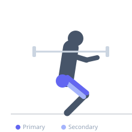
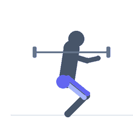

Exercise guide / High-Bar Barbell Back Squat
High-Bar Barbell Back Squat
The high-bar barbell back squat places the barbell on the upper trapezius, just below the base of the neck. This position encourages a more upright torso throughout the movement, placing greater demand on the quadriceps compared to the low-bar variation. It is the squat style used in Olympic weightlifting as it closely mimics the receiving position of the clean and snatch.
Primary muscles
rectus femoris
vastus lateralis
vastus medialis
vastus intermedius
gluteus maximus
Secondary muscles
biceps femoris long head
semitendinosus
Stabilizers
erector spinae
transverse abdominis
gastrocnemius medial
Equipment
Standard Barbell
Power Rack (Squat Cage)


Starting position
- Stand inside a power rack with the bar resting on the upper traps, below the base of the neck. Feet shoulder-width apart, toes turned out 15-25 degrees. Grip slightly wider than shoulders.
Setup
- Set the rack hooks at upper-chest height. Position bar across upper traps, unrack with a controlled step back.
Steps
- Step 1: Brace the core fully and take a deep breath before beginning the descent.
- Step 2: Break at the knees and hips simultaneously, keeping the torso relatively upright.
- Step 3: Descend with knees tracking over the toes until the hip crease passes below the knee.
- Step 4: Drive through the full foot and extend both the hips and knees to return to standing.
Coaching cues
- Chest up throughout
- Knees forward and out
- Sit between the heels
- Stand tall at the top
Breathing
- Inhale and brace before descent. Exhale at the top of each rep.
Range of motion
- Full depth requires hip crease below the top of the knee. The more upright torso allows greater depth for many lifters.
Tempo
- 3-0-1-0 (3s eccentric, no pause, 1s concentric)
Common mistakes
- Excessive forward lean (more typical of low-bar)
- Heels rising due to limited ankle dorsiflexion
- Knees collapsing inward at the bottom
- Losing upper back tension under the bar
Safety
- Set safety bars appropriately in the power rack
- Develop adequate ankle dorsiflexion and hip mobility
- Consider heel elevation with plates if ankle mobility is limited
Training
- strength: 1–5 reps
- hypertrophy: 5–12 reps
- endurance: 12–20 reps
- strength: 3–6 sets
- hypertrophy: 3–5 sets
- endurance: 2–4 sets
- Rest: {'strength': 240, 'hypertrophy': 120, 'endurance': 60}